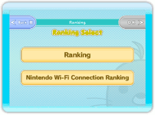
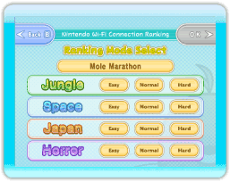
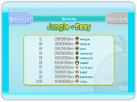
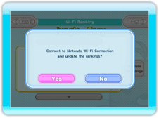

Seleccionar clasificación
Elige la clasificación que quieras ver.
Clasificación
La clasificación de los jugadores de tu consola Wii.
Clasificación de Conexión Wi-Fi de Nintendo
Usa la Conexión Wi-Fi de Nintendo para ver la clasificación de los jugadores de todo el país.

Pantalla de selección del modo de clasificación
Consulta la clasificación del modo, el escenario y el nivel de dificultad que desees ver.

Pantalla de clasificación
Clasificación
Muestra las diez mejores puntuaciones. Tu puntuación aparecerá resaltada en dicha lista.

Clasificación de Conexión Wi-Fi de Nintendo
Muestra las treinta mejores puntuaciones y las que se aproximen a la tuya. Pulsa los botones ▲ y ▼ para desplazarte por la lista.

Actualizar la clasificación
(Solo para la Clasificación de Conexión Wi-Fi de Nintendo)
Selecciona "Update Rankings" (Actualizar clasificación), después pulsa el botón "Yes" (Sí) para acceder a la Conexión Wi-Fi de Nintendo y actualizar así las puntuaciones de la clasificación. Si no has enviado tus puntuaciones a la Clasificación de Conexión Wi-Fi de Nintendo, puedes hacerlo aquí.
Selecciona "No" para cancelar la actualización de la clasificación.